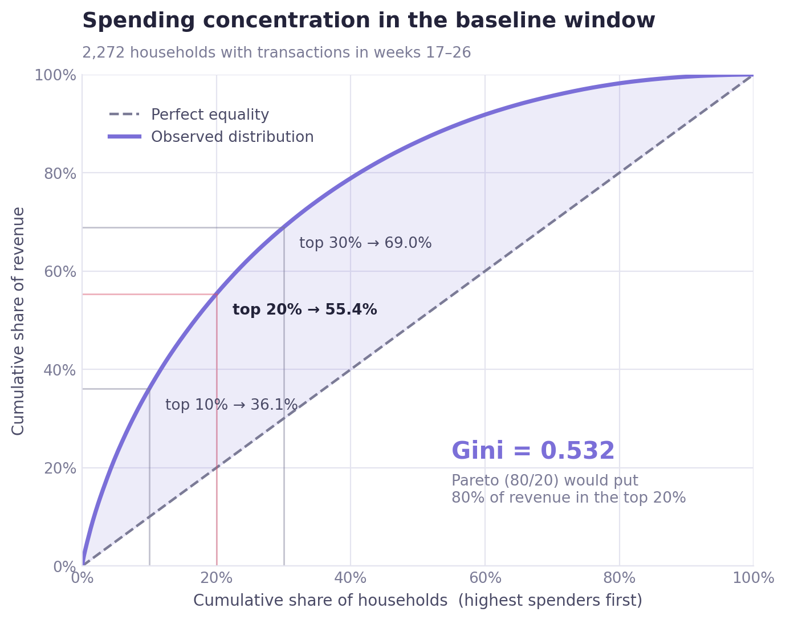
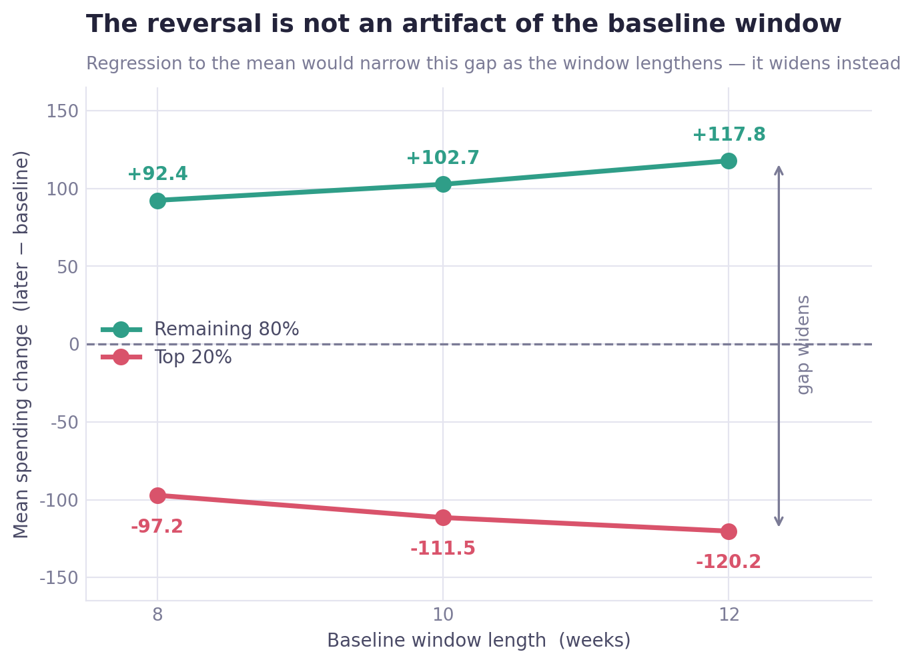
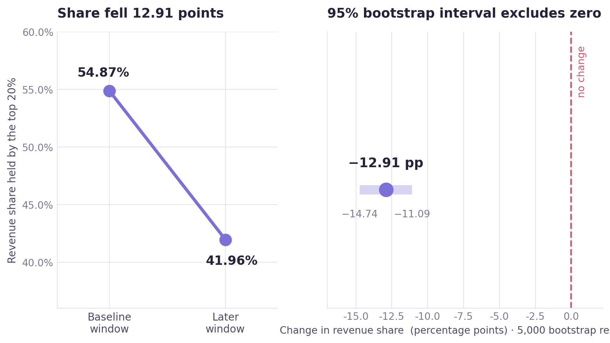
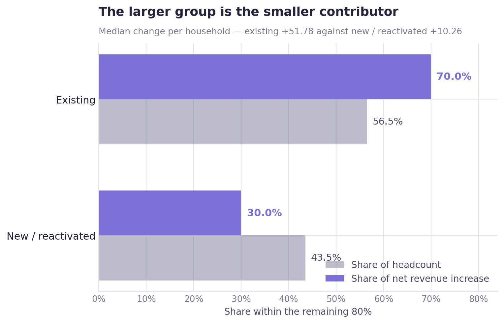
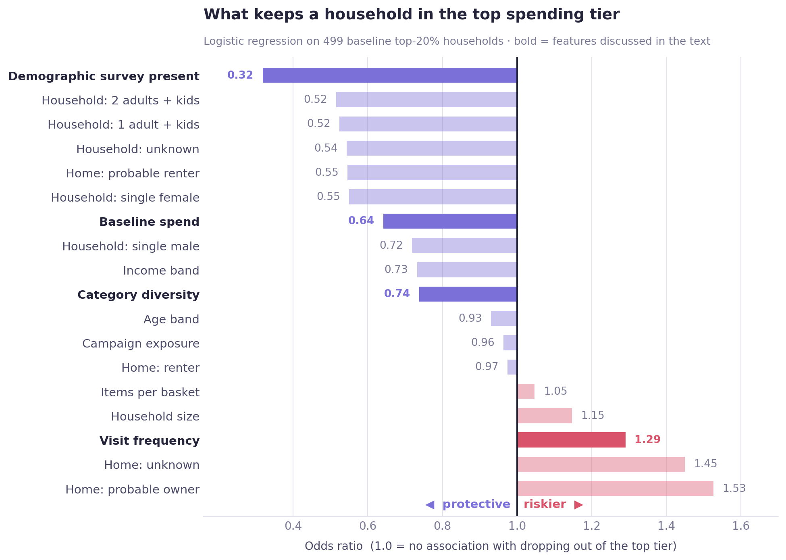
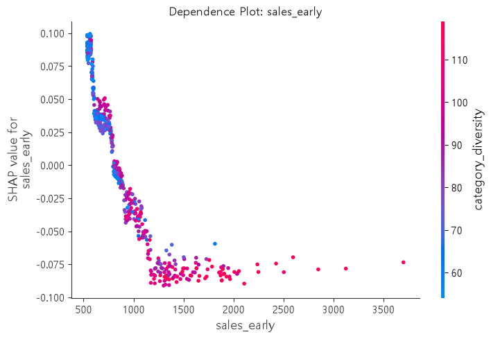

00
Executive summary
The whole case in one screen
The hypothesis was that revenue growth came from heavy spenders spending more. The data says the opposite — the gap between heavy and light spenders narrowed.
The claim under test. Revenue growth is concentrated in a small group of high-value households. If true, the top spenders should have grown in both absolute spend and share of revenue.
Three tests, one direction
| Test | Result | What it means |
|---|---|---|
| Top 20% · absolute spend | −131.45 | Heavy spenders shrank, not grew |
| Remaining 80% · absolute spend | +36.49 | The growth came from everyone else |
| Top 20% · revenue share | −12.91 pp | The concentration itself fell |
All three significant under Bonferroni correction. The hypothesis is rejected in both framings — absolute spend and revenue share.
Key findings
The reversal is not an artifact of where the baseline was drawn. Re-running with 8-, 10- and 12-week baselines never flips the sign — the gap widens instead, which is the opposite of what regression to the mean would produce.
New and reactivated households cluster in the growing group — 43.5% of the remaining 80%, against 13.6% of the top 20%. That association is strong and clean.
But association is not contribution. Those households are 43.5% of the headcount and only 30.0% of the actual revenue increase. The real driver is organic growth among existing active households — not acquisition.
Exploratory modelling identified who falls out of the top tier. Survey participation is the strongest protective signal; visit frequency is, counterintuitively, a risk factor once spend is held constant.
What this changes
Stop optimising for the top 20%
The revenue growth this business is seeing comes from the middle of the distribution, and from customers it already has. A retention strategy aimed only at heavy spenders is aimed at the group that is contracting.
At a glance
01
Overview
What was tested, and why the answer mattered
Retail analytics defaults to a familiar belief: a small group of heavy spenders carries the revenue, so growth must be coming from them. It is the assumption behind most loyalty programmes, and it is rarely checked directly.
This case checks it. Using 83 weeks of household transaction data, it asks whether the households that were already heavy spenders at the start actually grew — in absolute spend and in share of total revenue — and if not, where the growth came from instead.
Scope
This was a team project covering several hypotheses. H4 was mine — from methodology design through statistical testing to the exploratory model. Everything on this page is that work.
Why it is not a trivial question
The obvious test is circular. Define "top spenders" using the full period and you end up measuring "did the households that grew get classified as high-spending" — which answers itself. The design has to prevent that before any test runs.
The answer changes where retention budget goes. If growth is concentrated in heavy spenders, protect them. If it is not, a programme aimed only at them is aimed at the contracting group.
02
Business question
One hypothesis, split into two testable claims
H4 — Revenue growth is concentrated in a small group of high-spending households
| # | Claim | How it would be falsified |
|---|---|---|
| H4-1 | For the top X% of households fixed on the baseline window, both revenue share and absolute spend increased later | Either measure failing to increase |
| H4-2 | Top-spender status is associated with new / reactivated status | No association in the contingency table |
Households
2,500
Stable period
83 weeks
Baseline window
10 weeks
Threshold
top 20%
03
Data
Where the numbers come from, and the two thresholds that had to be chosen
Source
Dunnhumby "The Complete Journey" — household-level transaction records for 2,500 households, with demographic, campaign, coupon and product tables alongside. The analysis uses a stable 83-week period (weeks 17–99), discarding the ramp-up at either end of the panel.
The dataset was used for educational portfolio purposes. All analysis, statistical testing, interpretations, and recommendations were independently developed as part of this project.
Two numbers in this analysis are choices, not facts — how long the baseline window is, and where "top X%" is cut. Both were decided from the data rather than by convention.
Choice 1 · How long should the baseline window be?
Too short and households are ranked on noise; too long and it eats the period being measured. For each candidate length, the window was split into odd and even weeks, households ranked independently in each half, and the two rankings correlated — a direct measure of how reproducible the ranking is at that length.
Elbow
10 weeks
Rank correlation
ρ = 0.697
Cap applied
≤ 15% of period
Reported honestly: there was no sharp elbow. ρ = 0.697 is moderate, so the top-X% roster carries real noise. That is precisely why the sensitivity check in section 05 was planned from the outset — and why it ended up carrying the argument.
Choice 2 · Where is the top X% cut?
Rather than reaching for the conventional 20%, the actual concentration of spending was measured first.
| Measure | Value |
|---|---|
| Gini coefficient | 0.532 |
| Revenue held by the top 10% | 36.1% |
| Revenue held by the top 20% | 55.4% |
| Revenue held by the top 30% | 68.9% |
This is not the textbook Pareto distribution. The 80/20 rule would put 80% of revenue in the top 20%; here it is 55.4%. Spending is concentrated, but the middle of the distribution still carries real weight — which bounds how much the hypothesis could have explained even if it had held. Elbow detection put the cut at 18%, close enough to convention that 20% was adopted.

One decision not to clean the data
An IQR rule flagged 7.34% of transaction values as outliers. That was read as "IQR is the wrong tool for a right-skewed spending distribution" rather than as a data problem — and more decisively, this hypothesis is about high-spending transactions. Removing them would delete the signal being tested. All observations were kept and rank-based tests used instead.
04
Methodology
The rule that governs the design, and how the tests were chosen
The anti-circularity rule
"Top X%" is fixed using baseline-window data only, and never recomputed.
If later-period data enters the definition, the question silently changes from "did households that were already heavy spenders grow?" to "did the households that grew get classified as heavy spenders?" — which is guaranteed to come back positive regardless of what is true. Every downstream result depends on this one rule holding.
Test selection was driven by the distribution, not by preference
| Check | Result | Consequence |
|---|---|---|
| Normality (Shapiro-Wilk) | Rejected in both groups | No parametric mean tests |
| Equal variance (Levene) | Rejected — top-20% variance over 3× the rest | No pooled-variance t-test |
| Decision | Wilcoxon signed-rank for within-group change, Mann-Whitney U between groups, bootstrap for the share metric | |
Three related tests means a Bonferroni correction: α = 0.05 / 3 ≈ 0.0167. All reported results clear that threshold, not the uncorrected 0.05.
Why the share metric needed a different tool
Revenue share is one value per time point, not a value per household, so rank-based tests do not apply. A bootstrap over 5,000 resamples was used to build the interval directly.
Why a sensitivity check came early
The first result ran opposite to the hypothesis. Before reporting that, the obvious alternative — regression to the mean — had to be ruled out, so the planned robustness check was pulled forward ahead of schedule.
05
Analysis
Three findings, in the order they were established
A · The direction reversed — and survived the check
Comparing spending change per household between the baseline and later windows returned the opposite of what H4-1 predicts: the remaining 80% up, the top 20% down. The question was immediately whether this was a statistical artifact rather than a pattern.
| Baseline length | Remaining 80% | Top 20% |
|---|---|---|
| 8 weeks | +92.42 | −97.16 |
| 10 weeks | +102.74 | −111.49 |
| 12 weeks | +117.85 | −120.21 |
The sign never flips, and the gap widens as the baseline lengthens. A regression-to-the-mean artifact would behave the opposite way — a longer, more reliable baseline should shrink an apparent reversal, not grow it. Membership is stable too: Jaccard overlap between the three rosters runs 0.76–0.86.

Stated at the strength the evidence supports: the result is stable across baseline definitions and is not explicable by the choice of threshold alone. The pattern is a convergence of spending levels.
B · Both framings agree — spend and share
| Test | Statistic | Effect size | Verdict |
|---|---|---|---|
| Top 20% changed (Wilcoxon) | p = 0.00002 | r = −0.209 | decreased |
| Remaining 80% changed (Wilcoxon) | p ≈ 0.0000 | — | increased |
| Groups differ (Mann-Whitney U) | p ≈ 0.0000 | r = 0.290 | confirmed |
| Share of top 20% (bootstrap) | −12.91 pp | CI excludes 0 | fell |
The most readable figure is the common-language effect size on the between-group test: 0.355, where 0.5 would mean no difference. Pick one household from each group at random and the remaining-80% household grew more, far more often than chance would produce.

C · Association is not contribution
Since the growth came from the remaining 80%, the next question is whether it came from new and reactivated households arriving or from existing households spending more. A contingency table answers the first half.
| Group | Existing | New / reactivated |
|---|---|---|
| Remaining 80% | 1,127 (56.5%) | 866 (43.5%) |
| Top 20% | 431 (86.4%) | 68 (13.6%) |
Chi-square p ≈ 0.000000, Cramér's V = 0.246 — a moderate, unambiguous association. New and reactivated households sit overwhelmingly in the group that grew.
But a contingency table is an association, not a contribution
Two readings remain compatible with that table: either these households genuinely generated the additional revenue, or they simply spend less on average and therefore cluster in the lower group. Separating them requires computing their actual share of the net increase.
| Cohort | Share of headcount | Share of net increase | Median change |
|---|---|---|---|
| Existing | 56.5% | 70.0% | +51.78 |
| New / reactivated | 43.5% | 30.0% | +10.26 |
Contribution comes in below headcount. New and reactivated households are numerous but contribute less per head — the median existing household grew roughly 5× more.

A case of significant ≠ important
Testing the two cohorts directly returns p = 0.000928 — significant under Bonferroni. But the effect size is rank-biserial 0.086, with a common-language figure of 0.457 against a null of 0.5. With 1,993 households the test reaches significance on a difference small enough to ignore. Reporting only the p-value here would have been misleading.
06
Results
The verdict on both claims, and what the model added
H4-1 rejected
Both framings show the top 20% contracting — absolute spend down a median 131.45, revenue share down 12.91 points. What the data supports instead is de-concentration: the gap between high- and low-spending households narrowed over the period.
H4-2 supported, but reframed
The association holds (Cramér's V = 0.246). The contribution does not follow from it — 70% of the actual increase still came from existing households. The driver of growth was organic spending increase, not acquisition.
Exploratory retention-risk modelling
Statistical testing establishes what happened. It does not say who it happens to next. A model was built on the 499 households that were in the top 20% at baseline, predicting whether they were still there at the end — positioned as exploratory, because 499 rows is small and the goal is to surface risk factors rather than ship a scorer.
No temporal leakage
features ← weeks 17–26 · target ← weeks 90–99
Every feature was constructed from the baseline window only; the target was defined from the later window only, by recomputed rank rather than by raw change. No later-period information enters the feature set at any point.
| Model | PR-AUC | Verdict |
|---|---|---|
| Random baseline | 0.447 | Equal to the positive rate |
| Logistic regression | 0.674 | Selected — better recall and interpretable |
| Random forest | — | Markedly lower recall; too conservative at this sample size |
Recall was the selection metric, not accuracy. Missing an at-risk household is the costly error; one extra retention message to a stable customer is not. For this dataset and sample size, logistic regression is the better choice — the forest defaults to "retained" on ambiguous cases, which is exactly the wrong failure mode here.

Two findings worth acting on
Survey participation is the strongest protective factor (OR ≈ 0.35). Responding to a demographic survey has no mechanical effect on spending — it is standing in for engagement.
Visit frequency is a risk factor once spend is held constant. At equal total spend, households visiting often with small baskets are more likely to fall out of the top tier than households visiting rarely with large ones.
Both model families agree
SHAP importance from the random forest reproduces the logistic ordering almost exactly. Different model families cross-validating each other's key features is stronger evidence than either alone.
The forest adds one thing logistic regression structurally cannot see — saturation.

Is the model learning anything real?
permutation test p = 0.001 · beats dummy baselines · no train/validation gap
The pattern is not chance and there is no overfitting. But the learning curve has not flattened, so these are preliminary findings with room to improve on more data — not the ceiling of what the problem allows.
07
Business insights
What the numbers mean for the people spending the budget
① The growth is in the middle, not the top
The group generating revenue growth is the remaining 80% — and within it, existing customers rather than new arrivals. A strategy built on protecting heavy spenders is built on the segment that is contracting.
② Acquisition is not what is working
New and reactivated households are 43.5% of the growing group but only 30% of its revenue increase. The story is retention and organic growth, not acquisition — which points budget toward deepening existing relationships rather than widening the funnel.
③ Engagement predicts retention better than value does
Survey participation outranks baseline spend as a protective factor. That suggests a cheap, actionable early-warning signal: disengagement from non-purchase touchpoints may lead spending decline rather than follow it.
④ Spend more where the curve is still rising
Baseline spend and category diversity both saturate. Incremental retention effort on already-heavy, already-diverse households buys little; the same effort near the boundary buys more.
Recommendations
01 Re-point the retention programme at the mid-tier
- Who
- CRM and loyalty programme owners
- What
- Shift budget weighting away from a pure top-20% definition toward households in the rising region of the saturation curve — where additional spend and diversity still move retention
- Why
- The top 20% contracted by a median 131.45 while the remaining 80% grew. The current targeting definition inverts the actual growth pattern
- How to verify
- Hold out a matched portion of the mid-tier from the re-pointed programme and compare retention two periods later
02 Treat survey non-response as a churn signal
- Who
- Retention analytics; customer insight teams
- What
- Track engagement with non-purchase touchpoints — surveys, profile completion, programme interactions — as a leading indicator alongside spending
- Why
- Survey participation was the single strongest protective factor in the model (OR ≈ 0.35), outranking every demographic and behavioural variable including baseline spend
- Caveat
- This is an association in a 499-household exploratory model. It justifies instrumenting the signal, not automating decisions on it
03 Stop reporting revenue concentration without a trend
- Who
- Commercial reporting
- What
- Report the top-20% revenue share as a series, not a snapshot. A stable-looking 55% conceals a 12.9-point decline over the observation period
- Why
- The concentration figure is the number most likely to be quoted in support of a top-heavy strategy, and on its own it is the number that misleads
08
Limitations
What this cannot support
The analysis documents a convergence pattern. It does not explain why it happened, and it is not a causal study.
Contribution analysis is not causal inference
Section 05-C decomposes where the increase came from. It establishes no counterfactual — nothing here says what would have happened without new and reactivated households.
Moderate baseline reliability
The odd/even rank correlation at the chosen window was ρ = 0.697, so the top-X% roster is defined under real noise. The sensitivity check mitigates this but does not remove it.
Small sample in the modelling stage
499 households is small for a tree ensemble, and fold-to-fold variance is visible even in logistic regression. That is why this stage is framed as exploratory rather than predictive.
The mechanism is unexplained
De-concentration is documented but not accounted for. Whether it reflects high-value attrition, competitive substitution, or broad growth in the lower tiers cannot be separated with this data.
Observational throughout
No randomisation, no known assignment mechanism. Every result is an adjusted association rather than an established effect.
One panel, one retailer
2,500 households of a single retailer over 83 weeks. The convergence pattern may be specific to this business, this period, or this customer base.
09
Tools & Skills
What was used, and for what
Programming & data handling
Statistics & experimentation
Distribution & concentration analysis
Machine learning
Model evaluation
Practices
10
Repository
Notebook, code, and full write-up
View the analysis notebook on GitHub →The repository contains the complete Jupyter notebook with every test and figure reproducible from the raw dataset, along with the full README write-up covering the steps compressed on this page.
The other half of this project
Case 02 asks a different question of the same dataset — whether campaign response varies by customer spending tier, using two-way fixed effects. Read Case 02 →